esto lo hago solo para hablar de una de mis series favoritas (spoiler alert)
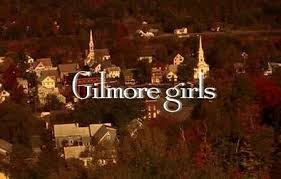
Es una serie de televisión, una que yo llamo confort show.
La vi por primera vez en 2021, y desde ahi me enamoré, me enamoré de los personajes y de sus formas, del guion y del acompañamiento que fue en todos los años que prosiguieron en mi vida, de hecho en este preciso momento la estoy mirando, eso dice algo de lo importante que es para mi
La trama sigue en la relacion entre una madre joven y su hija de 16 años que viven en un pequeño pueblo llamado Stars Hollow, vemos su cotidianidad, conocemos a sus amigxs y familia, su rutina, los lugares a donde van, sus gustos, y muchas otras cosas por el estilo que generan una intimidad que te hace sentir muy comoda.
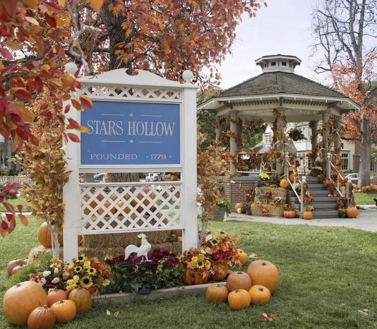
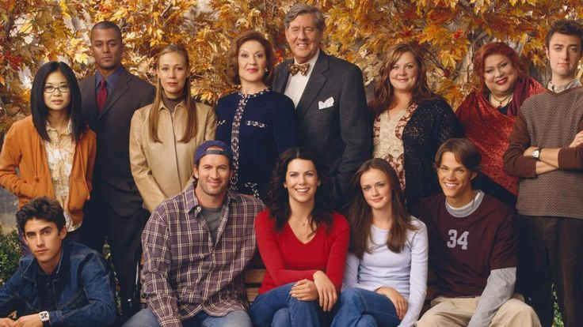
Las protagonistas son energeticas e ingeniosas, comparten una confianza y comunicacion que las caracteriza casi como mejores amigas, notamos en todas los intercambios que aparecen constantes referencias a elementos culturales populares, y disfrutan del sarcasmo y chistes constantes, el hilo de la charla nunca se pierde y cuando sucede es adrede sobre el guíon para hacer sentir algo incomodx al espectador.
La serie logra algo muy lindo que es que utiliza la repetición de algunos elementos de la trama y los vuelve iconicos en vez de aburridos, las locaciones que vemos en todos los capitulos nos ubican en qué personajes van a aparecer, qué es lo probable que sintamos, y que tipo de interacciones van a haber dependiendo de la temporada en la que nos encontremos. Aquí esos mencionados luagres:
Estos son algunos de los lugares más importantes que nos muestran a lo largo de las 7 temporadas, estos lugares lejos de ser cansadores de ver, se vuelven cada vez más interesantes y son un factor importante para que la serie entregue la sensacion de confort de la que hablamos previamente, al ver estos lugares tan seguido los sentimos como un hogar, algo conocido, predecible, pero con el entusiasmo de lo que vaya a pasar en cada ocasión.
Luke´s es el restaurante en dónde Lorelai y Rory van cada día, cuyo dueño es Luke, un muy buen amigo de Lorelai y un personaje muy importante en la historia.
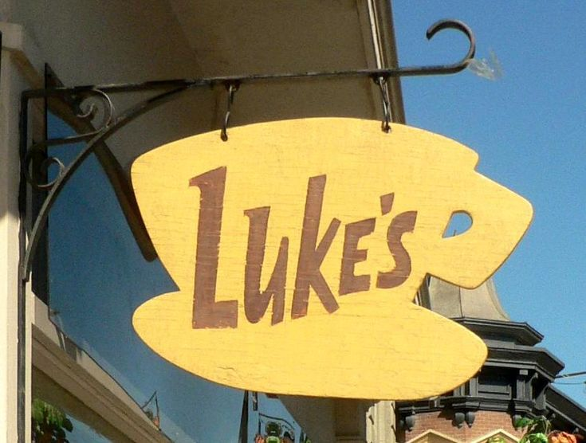
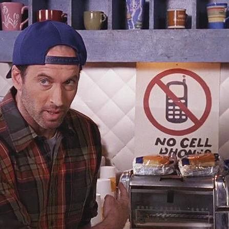
Richard and Emily´s house, en esta casa, casa de los papas de Lorelai y por ende abuelos de Rory veremos todas las famosas "friday night dinners"
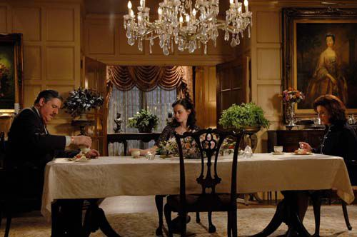
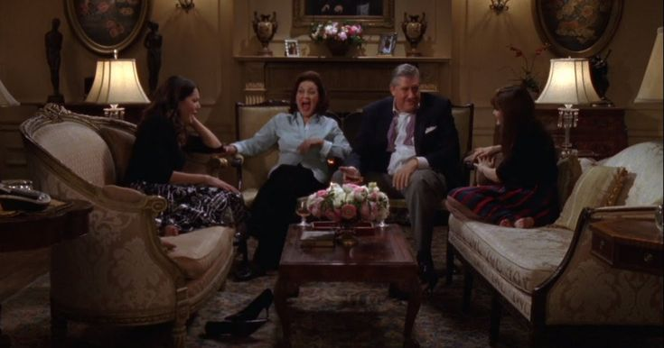
The Inn es el lugar donde trabaja Lorelai, y en donde nos encontraremos a personajes como Sookie, la mejor amiga de Lorelai, o Michael.
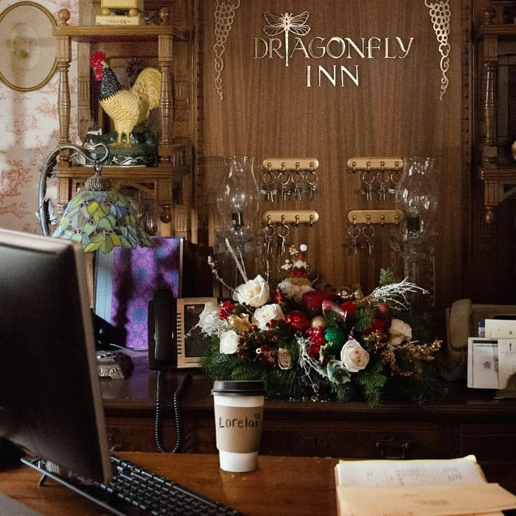
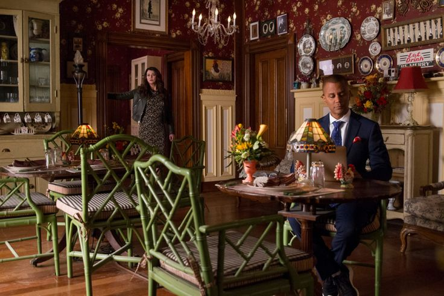
Chilton es la secundaria privada a la cual asiste Rory, en donde conoce a su futura amiga Paris
Yale es la universidad a la que Rory decide ir, en donde conoce a gente nueva, entre ellas la as importante, Logan
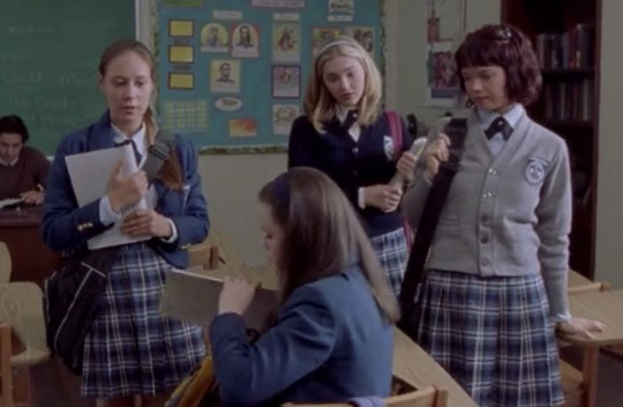
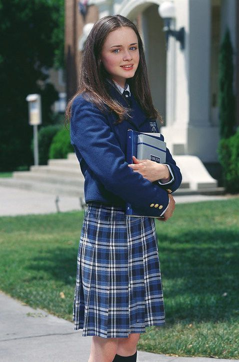
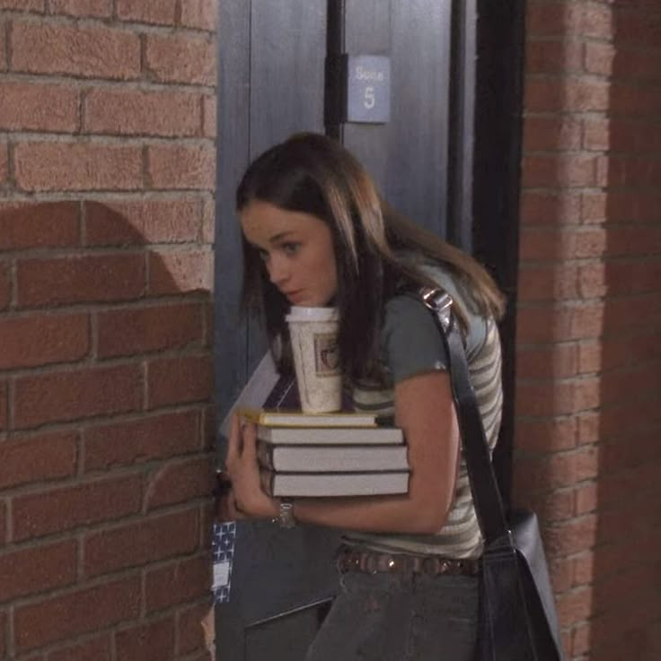
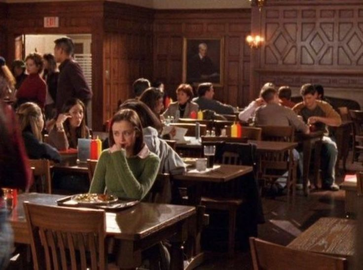
Town meetings son el lugar en donde se discuten todos los asuntos sobre el pueblo y en donde más se nos permite disfrutar de personajes como Taylor, Kirk, entre otros
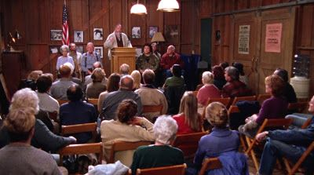
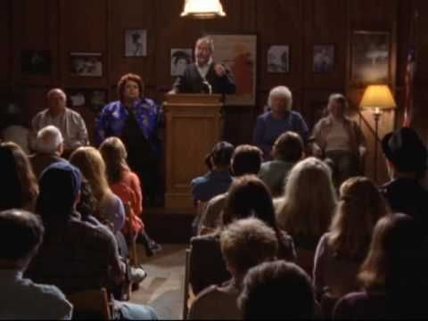
otros lugares no mencionados en la lista son: Doose´s market, El salon de Miss Patty, la casa de Lane y el gacebo
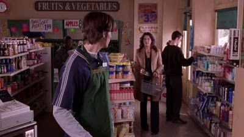
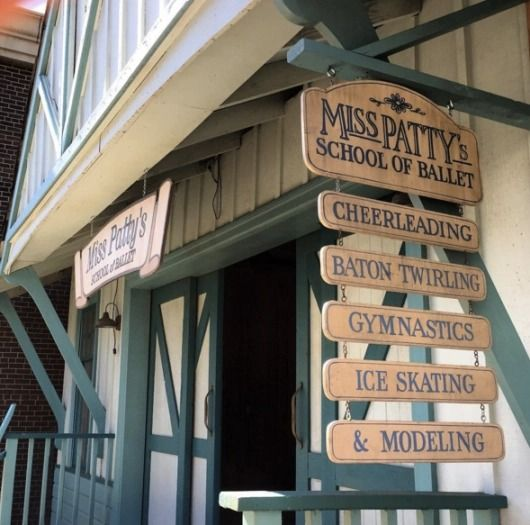
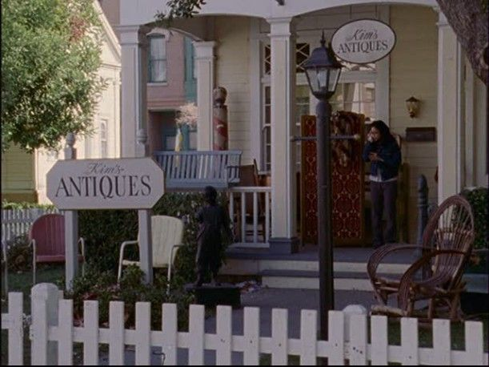
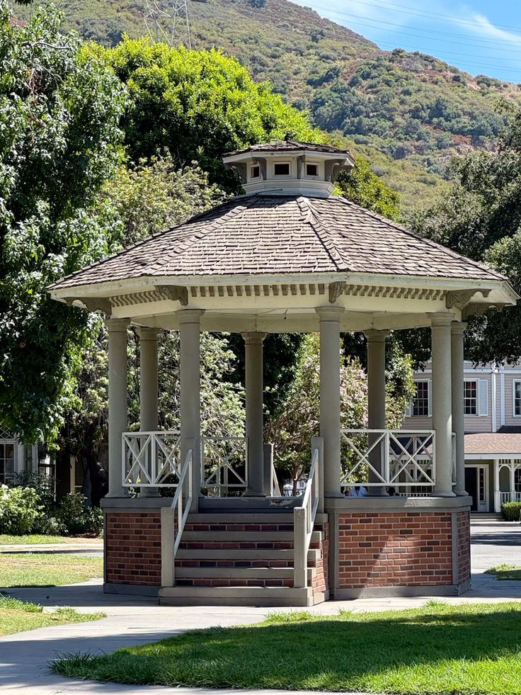
Para consultas sobre la página hablar con la creadora de la mismo, Milagros Peruzotti(enviar mail)(llamar)